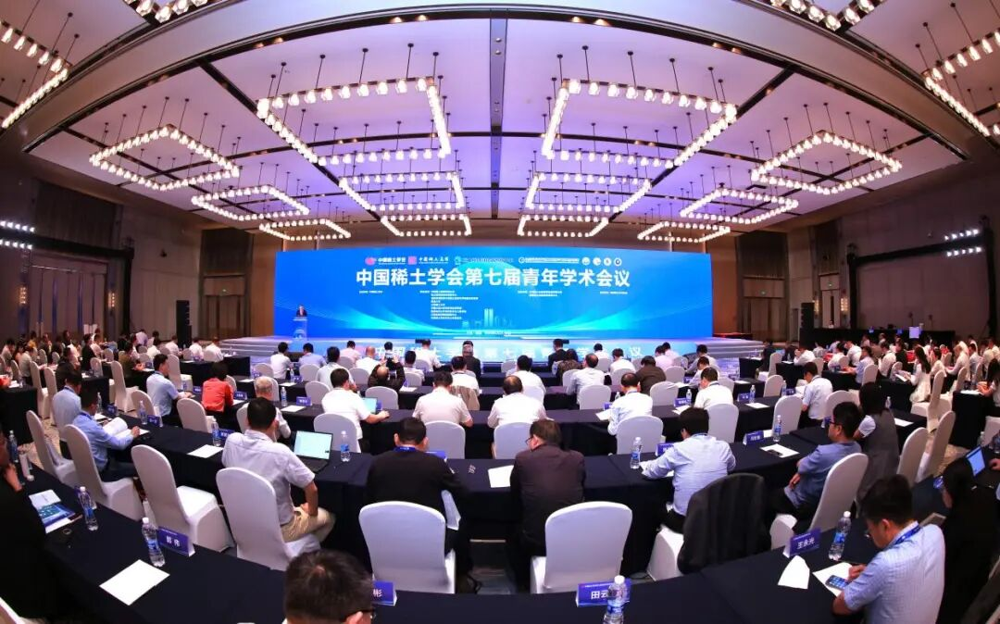
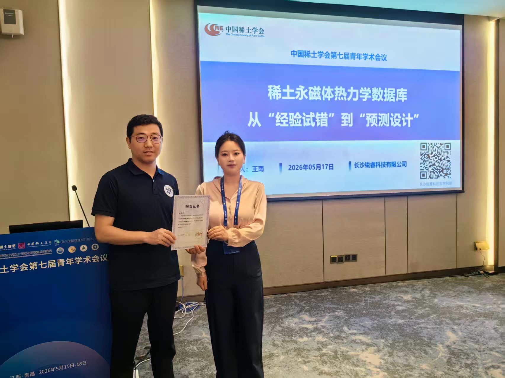
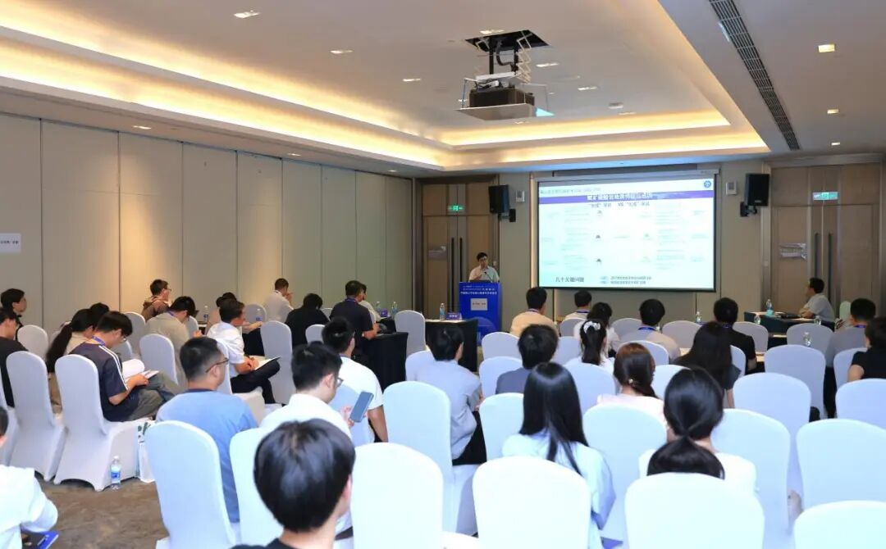

近日，中国稀土学会第七届青年学术会议在江西南昌召开。会议汇聚了稀土领域高校、科研院所及企业代表，围绕稀土材料、稀土永磁、稀土功能材料、绿色冶金与应用技术等方向开展学术交流。

公司两位技术人员受邀参加会议，并分别作邀请报告。其中，《稀土永磁体热力学数据库：从“经验试错”到“预测设计”》报告围绕稀土永磁材料研发中的热力学数据库建设与应用展开，介绍了基于热力学计算开展材料设计、组织调控及性能优化的方法与实践，展示了计算驱动材料研发在提升研发效率、降低试错成本方面的重要作用。
另一场邀请报告《ICALPHAD软件：相图计算与智能热力学优化的集成平台》重点介绍了ICALPHAD软件在相图计算、热力学参数优化及智能化材料设计中的功能与应用进展，展示了公司在CALPHAD方法、热力学计算平台开发以及智能材料设计方向上的技术积累。


会议期间，公司参会人员还与相关领域专家学者围绕稀土永磁材料设计、热力学数据库开发及产业应用等内容进行了深入交流，进一步了解行业前沿技术与发展趋势。
此次受邀作报告，体现了行业对公司在稀土永磁材料热力学研究与计算辅助设计领域技术工作的认可。未来，公司将继续加强技术创新与产学研交流合作，持续提升核心技术能力，为稀土功能材料产业高质量发展贡献力量。